Open onderwerp met navigatie
Hoe werkt picken / gereserveerd bij werkorders?
Inleiding
Bij picken kan er rekening gehouden worden, met artikelen die gereserveerd zijn voor een werkorder.
 Klik hier voor meer informatie over de knelpunten in de 'oude' situatie:
Klik hier voor meer informatie over de knelpunten in de 'oude' situatie:
-
Er ligt 1 artikel op voorraad die al gereserveerd is voor een verkooporders. Zodra de werkplaatschef deze toevoegt op een werkorder (besteld 1, geleverd 0) komt deze in SOR13 als te picken voor de werkorder.
De werkorder wordt gepickt waardoor het artikel niet uitgeleverd kan worden aan de verkooporder waar deze voor gereserveerd was.
-
De werkplaatschef plant een werkorder voor over een week en geeft aan dat hij een artikel nodig heeft. Hij zet deze op besteld 1, geleverd 0.
De klant draait regelmatig de Uitleveradvieslijst . Na een nieuwe ontvangst wordt deze Uitleveradvies lijst door de klant gedraaid.
Hierbij wordt nog geen rekening gehouden met de artikelen op de werkorders die nog gepickt moeten worden.
Opmerking: Neem contact op met onze helpdesk om te inventariseren of dit binnen uw organisatie toepasbaar is. Zij schakelen in overleg de planning in, om een consultant in te plannen.
Oplossing
De volgende onderdelen zijn aangepast:

Processchema: Werkorders i.c.m. order picken
Instellingen
Klik hier voor meer informatie om dit te doen:
Het volgende moet ingesteld zijn bij Instellingen werkorders (BIW), tabblad Orderpicken:
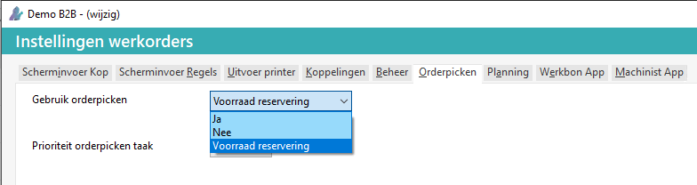
Dit reserveren voor werkorders wordt ondersteund d.m.v. twee velden bij een werkorder regel te weten:
-
Te picken: is de hoeveelheid die gereserveerd wordt van de aanwezige voorraad.
-
Gepickt: is het aantal wat uit de aanwezige voorraad is gehaald, waardoor de plankvoorraad wijzigt.
Deze velden komen naast de al aanwezige velden benodigd en geleverd, waarbij benodigd een economische reservering doet in de voorraad, zonder rekening te houden met de aanwezige plankvoorraad en geleverd is het aantal dat daadwerkelijk gemonteerd/versleuteld is.
Overige criteria
-
Bij Instellingen werkorders is de koppeling inkoop verplicht, anders verschijnt de kolom Benodigd niet.
-
Met de bestel (en back-to-back) functie wordt rekening gehouden.
-
Integratie met Overzicht orders (te picken) 2.0.
Werkorder
De kolom Te picken is toegevoegd bij:
-
Invoeren / wijzigen werkorders
Als bij Benodigd een aantal ingevuld wordt, wordt het aantal te picken ook gevuld, indien er voldoende voorraad is. Dit werkt net zoals bij verkooporders.
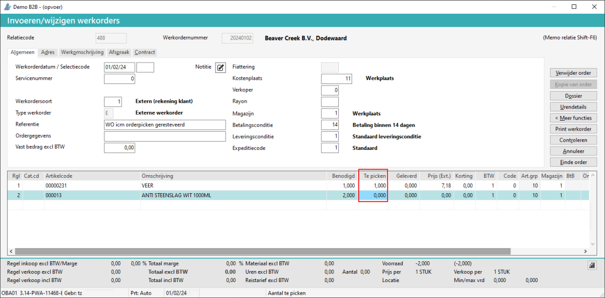
Belangrijk: Als in de regel, de kolom Geleverd wordt ingevuld, wordt het Te picken op 0 gesteld.
-
Werkorder details
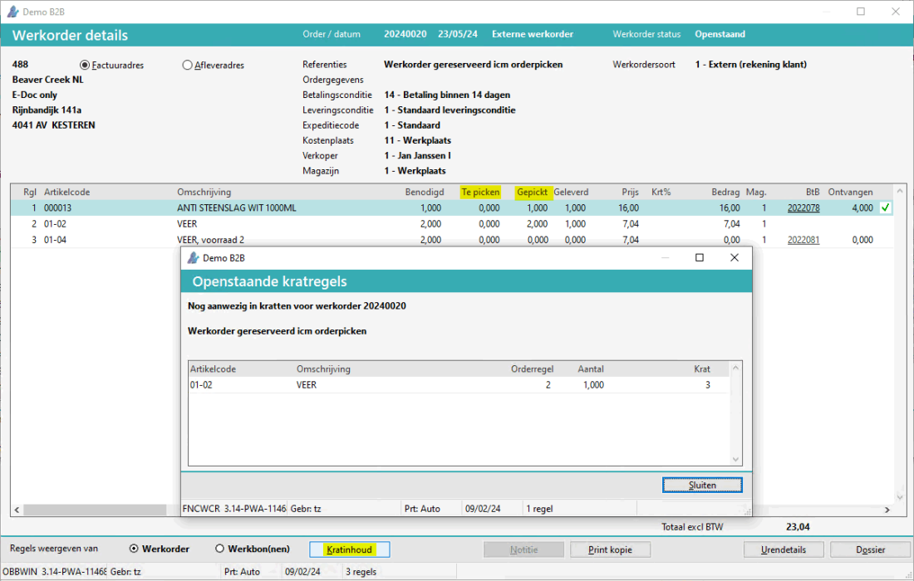
-
In de kolom Te picken is het aantal gereserveerd te zien van de WO. Dit moet nog gepickt worden.
-
In de kolom Gepickt is het aantal dat al gepickt is te zien. D.w.z. het aantal dat in de krat zit. Of zat als de monteur de krat al of niet verbruikt heeft.
-
Onder de knop Kratinhoud is te zien wat er in de krat 'zit'.
-
De kolom Gepickt is ook zichtbaar bij Invoeren / wijzigen werkorders vanaf versie 3.22.
Werkorder en bestellen
Als er voldoende voorraad is, wordt de kolom Te picken gevuld.
Als er te weinig voorraad is, wordt er een BtB inkooporder aangemaakt.
Picken werkorder
Bij Overzicht orders (te picken) 2.0 (VC)
worden de werkorders gepickt.
-
Selecteer Werkorders bij Te picken order soort.
-
Kies voor de knop Picken order.
-
Selecteer de WO.
-
Kies voor de knop Picken order.
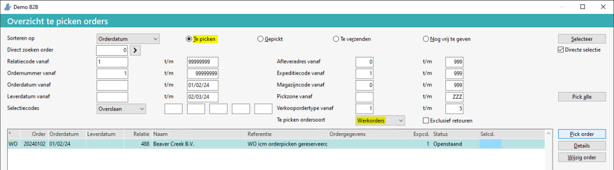
-
Bij Pick order wordt het aantal te picken opgeteld bij aantal gepickt. De order verdwijnt dan uit dit lijstje en komt onder Gepickt te staan.
Opmerking: De knop Picken alle werkt niet voor werkorders, alleen voor verkooporders.
Gepickte werkorders
Op tabblad Gepikt komen de werkorders, die gepickt zijn.
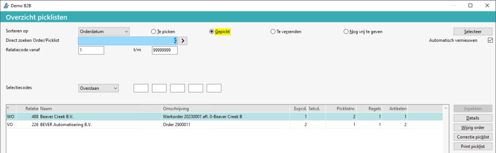
-
Bij Correctie picklijst, kunnen de artikelen die teruggenomen worden, gecorrigeerd worden.
-
Als de werkorders vrijgegeven worden, verdwijnen ze uit de regels.
-
Opmerking: Bij Gepickt is de knop Inpakken grijs of disabled bij een werkorder.
Bij de Voorraadinformatie uitgebreid is het aantal in kratten/colli te zien.
Klik hier, voor meer informatie over dit onderwerp.
-
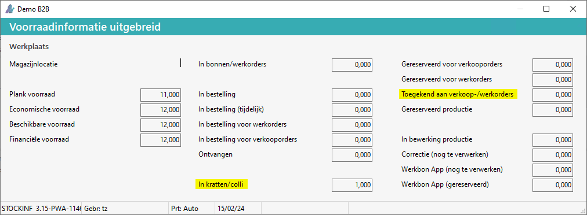
Toegevoegd:
| In kratten / colli |
Het gepickte aantal van verkooporder(s) en werkorder(s) in een (virtuele ) krat.
- Bij het vrijgeven van een VO / WO wordt het aantal verminderd, of het aantal gaat terug naar het magazijn (optie bij WO). |
| Werkbon app (gereserveerd) |
Het aantal dat gereserveerd is voor de Werkbon app. |
Toegekend aan verkoop- /werkorders
(was eerst: Gereserveerd backorders) |
Het aantal toegekend / gealloceerd van verkooporders en werkorders.
- Bij instelling picken is dit het aantal 'te picken'. Als er gepickt is, wordt deze 0 / verminderd en gaat het aantal naar 'in kratten/colli', vanaf versie 3.17. |
Was eerst:
| Gereserveerd backorders |
Artikelaantal dat als backorder op een verkooporder geregistreerd staat. |
Servicemelding met voorbereide artikelen en inplannen
Als een servicemelding ingepland wordt, verschijnt er een extra veld aantal gereserveerd vullen.
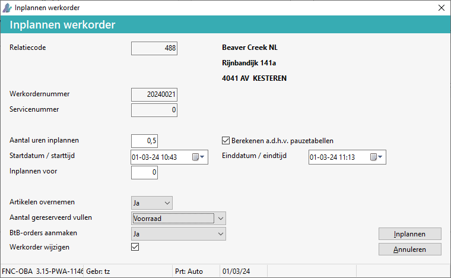
| Aantal gereserveerd vullen |
Optie om het aantal gereserveerd / te picken te vullen instelling:
- Voorraad (standaard)
- Nee |
| BtB-orders aanmaken |
Optie om BtB orders aan te maken bij een inplannen WO icm Picken:
- Ja (standaard) icm aantal gereserveerd is Voorraad.
- Nee icm aantal gereserveerd is nee.
|
Dit veld verschijnt ook bij het vrijgeven van een offerte naar een werkorder.
Werkbon app en picken
Bij het starten van een werkorder of bij het vernieuwen van de dagplanning, kan het volgende scherm verschijnen, als er iets gepickt is.
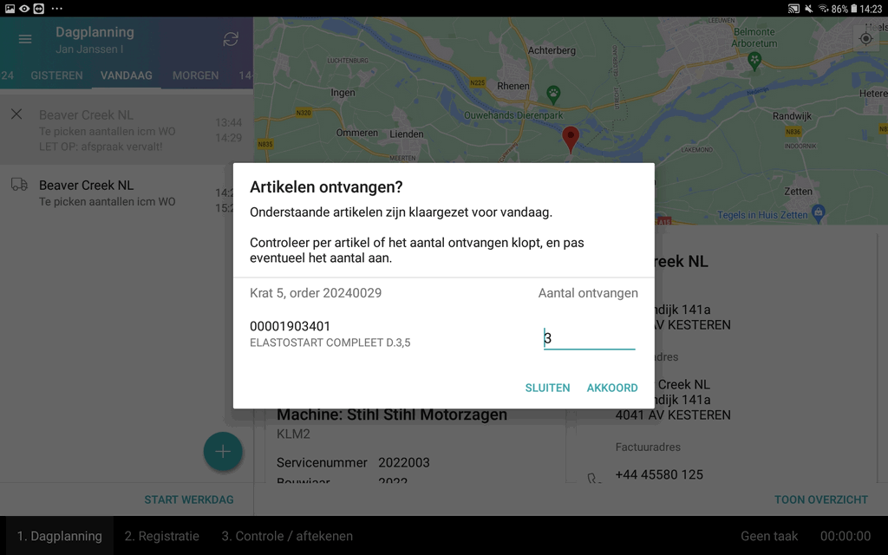
Bij het zoeken op de Werkbon App is de eigen voorraad te zien.
Alleen bij de eerste 10 artikelen wordt de Eigen voorraad getoond, d.w.z. een groen of rood bolletje.
Werkbon app en einde werk
In onderstaand voorbeeld is de werkorder verwerkt op de Werkbon app, met de optie Verwerken / verzenden Direct.
-
In onderstaand voorbeeld is van de artikelen op regel 2 en 3 het Materiaalverbruik wat geleverd is, geregistreerd.
Het aantal Geleverd wordt gevuld vanuit de Werkbon app.
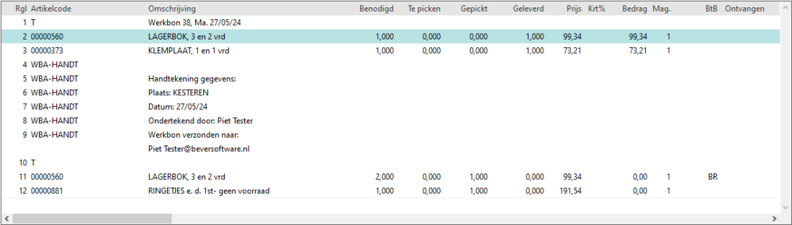
Werkbon app en bestellen
Bij het Bestellen is het mogelijk om een gedeelte te bestellen, als er iets op voorraad is.
-
Als het aantal niet volledig in het magazijn aanwezig is, verschijnt onderstaand scherm.
-
Direct bestellen (spoedbestelling).
-
X uit voorraad en rest (Y) bestellen.
-
Alles bestellen.
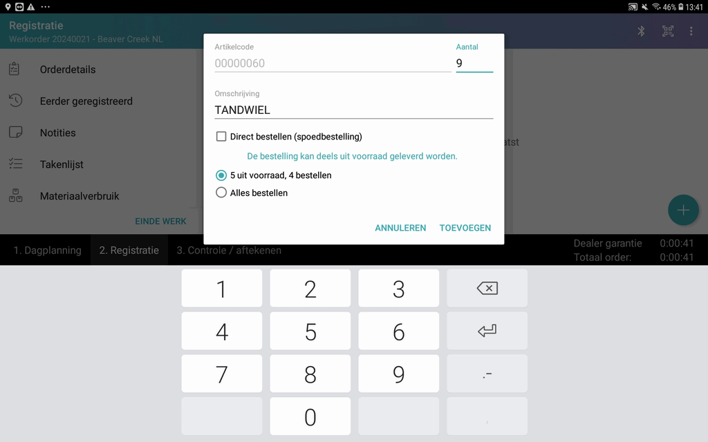
Bij voldoende voorraad verschijnt de opmerking: De bestelling kan volledig uit voorraad geleverd worden.
Bij niet op voorraad: Dit artikel is niet op voorraad in het hoofdmagazijn en zal besteld worden.
-
Verwerking op de Werkorder na bestelling:
Het aantal uit voorraad komt in de kolom Te picken terecht, nadat registratie 'gereed' gemeld is.
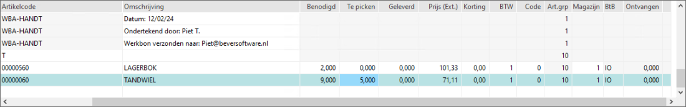
Hierdoor is het aantal voor deze WO 'gereserveerd'.
-
Verwerking Werkbon / registratie naar gereedmelding (optie Direct).
Werkorder vrijgeven
Bij het Vrijgeven van een WO verschijnt, als er nog wat in de krat(ten) zit, de melding: Werkorder <WO> is nog aanwezig in krat <X>. Er kan bijv. minder verbruikt zijn.
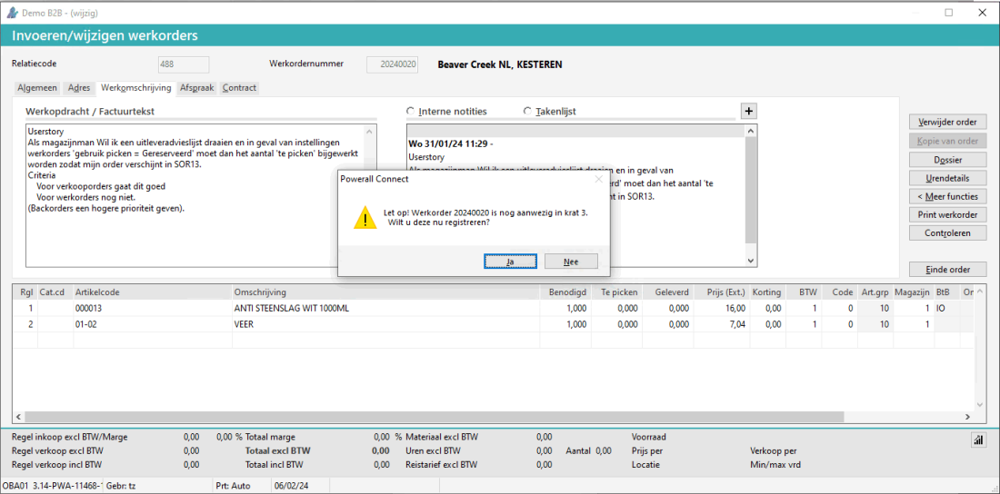
Bij Ja verschijnen het scherm Openstaande kratregels.
Het volgende is mogelijk:
-
Optie Alles op werkorder
Het aantal gepickt wordt (op 0 gezet) en opgeteld bij aantal geleverd.
-
Optie Alles retour magazijn
Het aantal wordt retour op het magazijn geboekt, d.w.z. het aantal geleverd blijft hetzelfde.
-
Per regel kan de registratie op werkorder of retourmagazijn bepaald worden.
-
Kies voor de knop Opslaan.
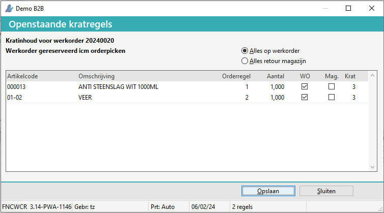
De pop-up melding Inhoud van de krat wordt hiermee geleegd, weet u dit zeker? verschijnt.
Kies voor de knop Ja.
Bij het gebruik van de Werkbon App wordt geleverd ingevuld.
De WO kan vrijgegeven worden, zie Werkorder gereed melden / vrijgeven.
Offerte en werkorder
Bij Vrijgeven offerte wordt het aantal gepickt ingevuld, als er voldoende voorradig is.
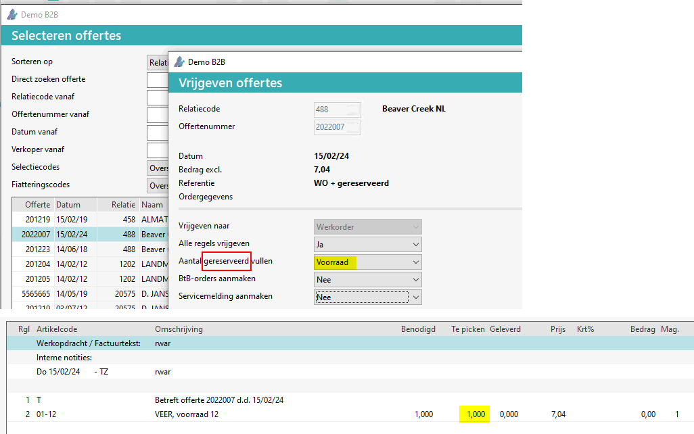
Uitleveradvieslijst
Bij de Uitleveradvieslijst orders, wordt er ook (standaard) rekening gehouden met werkorders.
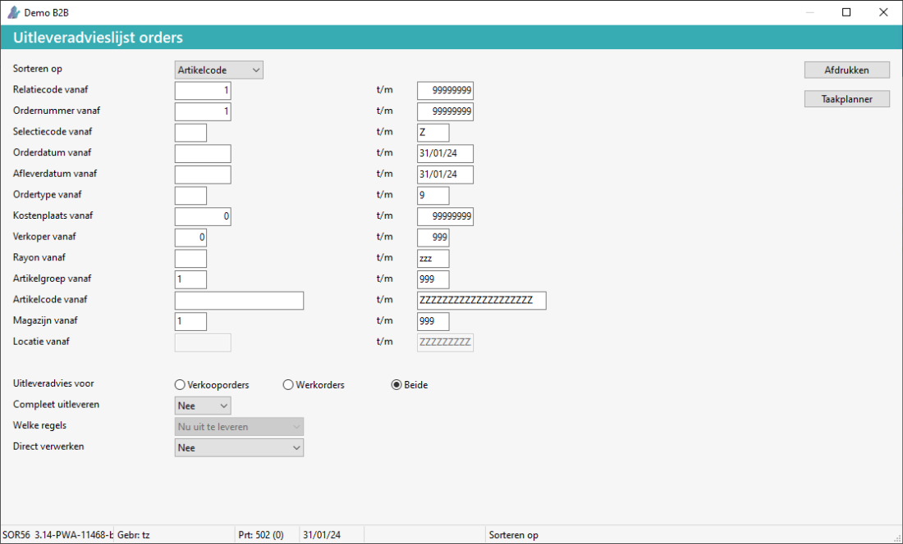
| Uitleveradvies voor |
Optie voor het uitleveradvies orderpicken i.c.m. WO voorraad reservering:
- Verkooporder
- Werkorder, openstaande en behalve status servicemelding werk gereed.
- Beide (standaard) i.c.m. de Taakplanner is altijd Beide. |
| Direct verwerken |
Optie voor direct verwerken of bijwerken van het aantal:
- Nee (standaard)
- Ja
Bij Ja icm Order picken is ja, is dit bij VO aantal gereserveerd en bij WO gepickt, vanaf versie 3.17. |
-
Als Direct verwerken is ja en de werkorder gelocked is, verschijnt er een melding.
-
Werkorders met de status Werk gereed worden overgeslagen.
-
Een werkorder gaat voor een verkooporder.
Zie ook Uitleveradvieslijst.
Werkbon App en picken
FAQ
Wat gebeurt er bij het verwijderen van een orderregel met een BtB
Bij het verwijderen verschijnt er een vraag of de gepickte delen teruggeboekt moeten worden.
Bij Ja gebeurt het volgende, vanaf versie 3.23:
-
Werkorderregel wordt verwijderd.
-
Onderdelen gaan weer terug naar voorraad, deze wordt bijgewerkt
-
Kratregels worden verwijderd.
-
Picklistregels worden verwijderd.
Gerelateerde onderwerpen
Copyright © 1990-2026 Beaver Creek Technology B.V. Disclaimer
{kind=link}